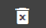

-
Open the Coding Forms window from Case Settings. For further instructions see Manage Review Case Settings.
-
Click the  button to create a new coding form.
button to create a new coding form.

-
Enter a Name for the form and complete the
following steps as needed.
-
Permissions:
If the form should be restricted to certain user groups:
-
Click the hyperlink Add/Remove Groups to open the Group Security dialog.
-
Select
needed groups and click OK.
|

|
Tip: To make a coding form available to all groups that are currently
defined for the case, click Select All. The form will be unavailable
for groups added after this selection (unless you add them).
|
-
Fields:
Select the fields to be displayed on the Record
View pane:
-
Expand
the Fields section of the Coding Form configuration area.

-
To
select all fields, click  .
.
-
To
select individual fields, double-click the fields in the Available
Fields list.
-
To
select multiple items, click a field name, then Shift+click or Ctrl+click
additional fields to choose a contiguous or non-contiguous set, respectively.
When needed fields have been selected, click .
-
Field order:
When needed fields have been selected, organize them in a way to best
meet your users’ needs:
-
In
the Selected Fields area, click
a field to be reordered.
-
Click
Up or Down
until the field is in the desired location.
-
Repeat
these steps to reorder other fields.
-
Tags:
-
Expand
the Tags section of the Coding Form configuration area,
then click  .
.

-
Select
the tag groups and tags to be included.
|

|
Note: If a tag group has the Exclusive
rule, all tags in the group must be selected.
|
-
Click
OK in the Select Tags dialog box.
-
Tag group
order: When needed tags have been added, organize them in a way
to best meet your users’ needs:
- In
the Tags area, click a tag group
to be reordered.
- Click
 or
or  until the tag group is in the desired location.
until the tag group is in the desired location.
- Repeat
these steps to reorder other tag groups.
-
Rules:
See
Define Coding Form Rules for details on setting rules as part of your coding form definition.
-
When finished, click  .
.
-
Repeat this procedure to configure other coding
forms.
Basic “if-then” rules can be defined regarding tags,
tag groups, fields, and/or review status to enforce record editing and/or
tagging requirements.
-
If a particular tag is set, then a particular
field (such as a Comments field) cannot be empty.
-
If tags from all required tag groups have been
applied, then the status of a review pass will be automatically changed
from Not Reviewed to Reviewed
Before you add rules to a coding form, plan the rules
and rule sequence to ensure that they will correctly enforce the needed
review activities and be conducted in the correct order.
-
Complete the needed steps in Create New Coding Forms to access Coding Forms configuration and define fields
and/or tags for the coding form.
-
Expand the Rules
section of the Coding Form configuration
area, then click Add. Complete
the Edit Coding Form Rule dialog box as described in the following steps.
-
Name:
Enter a name that describes the rule’s purpose. Complete step 4 or 5,
depending on the type of rule being defined.
-
Review Rule:
This rule automates changing the review status of documents when all required
tags have been applied. To define this type of rule:
-
For
Type, select Review
Rule.
-
In
the review pass list, select the review pass to which the rule will apply.
-
Click
OK.

-
Form Rule:
Form rules are enforced when a user edits fields in Record View or applies
tags. A user cannot select a new document for editing/tagging until all
rules are met. Form rules help enforce needed review actions and promote
consistency amongst users.
For
the Type, select Form
Rule. Create the rule statement by completing the following steps
from left to right in the dialog box.
IF statement:
-
Select
the item type—Field, Tag,
or Tag Group that is the subject
of the “if” portion of the rule.
-
Select
the specific field, tag(s), or tag group(s). Note: Only the fields and
tag groups/tags that have been added to the form will be available.
-
If
multiple tags or tag groups are selected, choose the way in which they
should be considered: All of these
must match the condition or Any of these
must match the condition.
-
Select
the needed condition. For example, for tags or tag groups, the conditions
are Tagged or Not
Tagged.
THEN statement:
-
Select
the item type—Field, Tag,
or Tag Group to which the “then”
portion of the rule applies.
-
Select
the specific field, tag(s), or tag group(s).
-
If
multiple tags or tag groups are selected, choose the way in which they
should be considered: All of these
must match the condition or Any of these
must match the condition.
-
Select
the required condition. For example, for fields, the conditions are must
Be Empty or Not
Be Empty.
-
Read
the rule statement to ensure it is as intended; make changes if needed.
-
If
the rule should not yet be active, clear the Enable
option.
-
When
finished, click OK.
The following example shows a rule in the Rules
area of the Coding Form configuration area. In this example, if the document is tagged Responsive, then a Confidentiality tag must be applied.

-
Repeat these steps to create other rules.
-
When all rules are defined, review the order
of rules in the Rules tab of the
Coding Form dialog box. Rules are enforced in order from top to bottom.
-
If the order of rules should be changed:
-
Select
a rule to be reordered.
-
Click
Up or Down
until the rule is in the desired location.
-
Repeat
these steps to reorder other rules.
-
When the coding form definition is complete,
click Save.
To change the order of coding forms, or to revise or
delete an existing coding form.
-
Review Manage Review Case Settings for instructions on opening the case settings options.
-
Click the Coding Forms tab.
-
To re-order coding forms (as they are listed
in both Case Administration and in the list in ( Record View), drag
each form to be moved to its desired location in the coding form list.
|
|
Note: To sort the coding forms list, click  to display the sort menu and choose an option. to display the sort menu and choose an option.
|
-
To delete the selected coding form, click

,
then click Yes in response to
the confirmation message.
-
To revise the selected coding form, click  , and
make changes as follows:
, and
make changes as follows:
-
Fields:
Add, remove, or reorder the fields in the form.
-
Tags:
Add, remove, or reorder tags in the form.
-
Rules: Add, remove, edit, or reorder tag rules in the form.
-
Edit or delete a rule by hovering over the row with the relevant rule and clicking either the or button that appears to the left. See Create New Coding Forms for details on coding form options.
-
When finished, click .
-
Notify users of the changes that have been
made.
The Document Viewer contains a panel to the right; the panel is divided into separate areas for the coding form (top) and the tag palette (bottom). You can resize these areas to allow them to maintain different proportions as required. Within the panel there is a horizontal bar that separates the two areas; the bar can be dragged vertically to allocate more or less space to either the top portion (coding form) or the bottom portion (tag palette) of the panel.
To resize the coding form / tag palette panel, mouse over the horizontal bar within the panel. When the mouse pointer changes to the double arrow, drag the bar either up or down, depending on how you want to size the two areas.